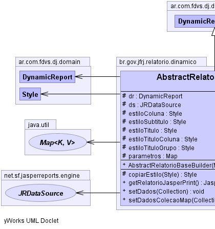
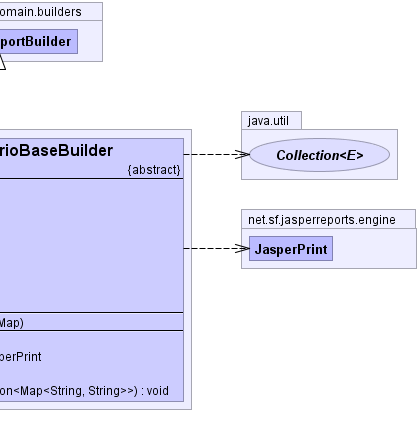

ar.com.fdvs.dj.domain.builders.DynamicReportBuilder
br.gov.jfrj.relatorio.dinamico.AbstractRelatorioBaseBuilder
ar.com.fdvs.dj.domain.builders.DynamicReportBuilder
br.gov.jfrj.relatorio.dinamico.AbstractRelatorioBaseBuilder
|
|||||||||
| PREV CLASS NEXT CLASS | FRAMES NO FRAMES | ||||||||
| SUMMARY: NESTED | FIELD | CONSTR | METHOD | DETAIL: FIELD | CONSTR | METHOD | ||||||||
java.lang.Object
public abstract class AbstractRelatorioBaseBuilder
Base para a geração de relatório dinâmicos.
Para criar um relatório personalizado, extenda essa classe.
Para criar relatórios rápidos use a classe RelatorioTemplate ou RelatorioRapido.
Esta classe basicamente coloca o brasão da Justiça e define os estilos básicos.
|  |  |
| Field Summary | |
|---|---|
protected ar.com.fdvs.dj.domain.DynamicReport |
dr
|
protected net.sf.jasperreports.engine.JRDataSource |
ds
|
protected ar.com.fdvs.dj.domain.Style |
estiloColuna
|
protected ar.com.fdvs.dj.domain.Style |
estiloSubtitulo
|
protected ar.com.fdvs.dj.domain.Style |
estiloTitulo
|
protected ar.com.fdvs.dj.domain.Style |
estiloTituloColuna
|
protected ar.com.fdvs.dj.domain.Style |
estiloTituloGrupo
|
protected java.util.Map |
parametros
|
| Fields inherited from class ar.com.fdvs.dj.domain.builders.DynamicReportBuilder |
|---|
autoTexts, concatenatedReports, globalFooterCrosstabs, globalHeaderCrosstabs, globalVariablesGroup, groupFooterSubreports, groupHeaderSubreports, options, report |
| Constructor Summary | |
|---|---|
AbstractRelatorioBaseBuilder(java.util.Map parametros)
|
|
| Method Summary | |
|---|---|
protected ar.com.fdvs.dj.domain.Style |
copiarEstilo(ar.com.fdvs.dj.domain.Style estilo)
|
net.sf.jasperreports.engine.JasperPrint |
getRelatorioJasperPrint()
Método que retorna o relatório no formato JasperPrint. |
abstract void |
setDados(java.util.Collection dados)
Configura os dados que serão exibidos no relatório com Query. |
void |
setDadosColecaoMap(java.util.Collection<java.util.Map<java.lang.String,java.lang.String>> dados)
Configura os dados que serão exibidos no relatório com Collections de Maps. |
| Methods inherited from class ar.com.fdvs.dj.domain.builders.DynamicReportBuilder |
|---|
addAutoText, addAutoText, addAutoText, addAutoText, addAutoText, addAutoText, addAutoText, addChart, addColumn, addConcatenatedReport, addConcatenatedReport, addConcatenatedReport, addConcatenatedReport, addConcatenatedReport, addField, addFirstPageImageBanner, addFont, addFooterCrosstab, addGlobalFooterVariable, addGlobalFooterVariable, addGlobalFooterVariable, addGlobalHeaderVariable, addGlobalHeaderVariable, addGroup, addHeaderCrosstab, addImageBanner, addParameter, addResourceBundle, addStyle, addSubreportInGroupFooter, addSubreportInGroupFooter, addSubreportInGroupFooter, addSubreportInGroupFooter, addSubreportInGroupFooter, addSubreportInGroupFooter, addSubreportInGroupFooter, addSubreportInGroupHeader, addSubreportInGroupHeader, addSubreportInGroupHeader, addSubreportInGroupHeader, addSubreportInGroupHeader, addSubreportInGroupHeader, addSubreportsToGroups, build, concatenateReports, setAllowDetailSplit, setBottomMargin, setBottomMargin, setColumnSpace, setColumnSpace, setColumnsPerPage, setColumnsPerPage, setColumnsPerPage, setColumnsPerPage, setDefaultStyles, setDetailHeight, setDetailHeight, setFooterHeight, setFooterHeight, setGlobalFooterVariableHeight, setGlobalHeaderVariableHeight, setGrandTotalLegend, setGrandTotalLegendStyle, setHeaderHeight, setHeaderHeight, setIgnorePagination, setLeftMargin, setLeftMargin, setMargins, setOddRowBackgroundStyle, setPageSizeAndOrientation, setPrintBackgroundOnOddRows, setPrintBackgroundOnOddRows, setPrintColumnNames, setProperty, setQuery, setReportLocale, setReportName, setRightMargin, setRightMargin, setSubtitle, setSubtitleHeight, setSubtitleStyle, setTemplateFile, setTemplateFile, setTitle, setTitleHeight, setTitleStyle, setTopMargin, setTopMargin, setUseFullPageWidth, setUseFullPageWidth, setWhenNoData, setWhenNoData, setWhenNoDataAllSectionNoDetail, setWhenNoDataBlankPage, setWhenNoDataNoPages, setWhenNoDataShowNoDataSection, setWhenNoDataType, setWhenResourceMissing, setWhenResourceMissingLeaveEmptySpace, setWhenResourceMissingReturnNull, setWhenResourceMissingShowKey, setWhenResourceMissingThrowException |
| Methods inherited from class java.lang.Object |
|---|
clone, equals, finalize, getClass, hashCode, notify, notifyAll, toString, wait, wait, wait |
| Field Detail |
|---|
protected net.sf.jasperreports.engine.JRDataSource ds
protected ar.com.fdvs.dj.domain.DynamicReport dr
protected ar.com.fdvs.dj.domain.Style estiloTitulo
protected ar.com.fdvs.dj.domain.Style estiloSubtitulo
protected ar.com.fdvs.dj.domain.Style estiloTituloColuna
protected ar.com.fdvs.dj.domain.Style estiloColuna
protected ar.com.fdvs.dj.domain.Style estiloTituloGrupo
protected java.util.Map parametros
| Constructor Detail |
|---|
public AbstractRelatorioBaseBuilder(java.util.Map parametros)
throws ar.com.fdvs.dj.domain.builders.DJBuilderException
ar.com.fdvs.dj.domain.builders.DJBuilderException| Method Detail |
|---|
public abstract void setDados(java.util.Collection dados)
throws java.lang.Exception
dados - Os beans da consulta são usados para preencher o relatório.
Para essa modalidade funcionar corretamente, é necessário que o
relatório tenha seus campos com nomes idênticos aos métodos de acesso do bean.
Exemplo: Use setColumnProperty(nome,...) para um bean.getNome()
java.lang.Exception
public void setDadosColecaoMap(java.util.Collection<java.util.Map<java.lang.String,java.lang.String>> dados)
throws java.lang.Exception
dados - Cada item da collection deve ser um Mapjava.lang.Exception
public net.sf.jasperreports.engine.JasperPrint getRelatorioJasperPrint()
throws net.sf.jasperreports.engine.JRException
net.sf.jasperreports.engine.JRExceptionprotected ar.com.fdvs.dj.domain.Style copiarEstilo(ar.com.fdvs.dj.domain.Style estilo)
|
|||||||||
| PREV CLASS NEXT CLASS | FRAMES NO FRAMES | ||||||||
| SUMMARY: NESTED | FIELD | CONSTR | METHOD | DETAIL: FIELD | CONSTR | METHOD | ||||||||